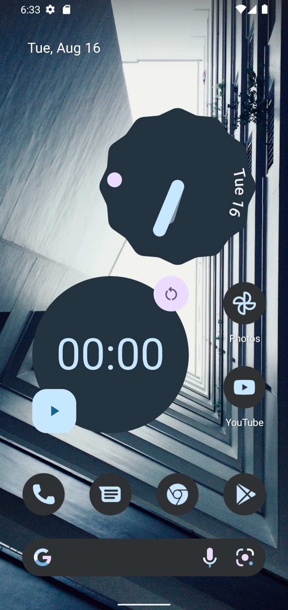
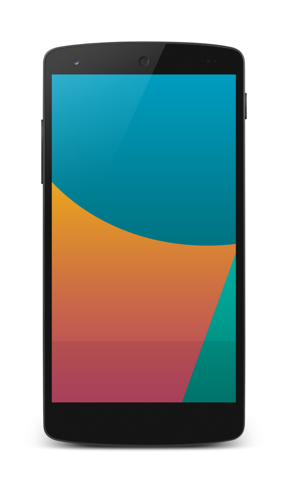
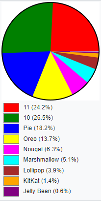

Android (укр. Андроїд) — операційна система і платформа для мобільних телефонів та планшетних комп'ютерів, створена компанією Google на базі ядра Linux. Підтримується альянсом Open Handset Alliance (OHA).
Хоча Android базується на ядрі Linux, він стоїть дещо осторонь Linux-спільноти та Linux-інфраструктури. Базовим елементом цієї операційної системи є реалізація Dalvik віртуальної машини Java, і все програмне забезпечення і застосування спираються на цю реалізацію Java.
У 84 % смартфонів, проданих у 3-му кварталі 2014 року, було встановлено операційну систему Android
У березні 2017 року ОС Android стала найпопулярнішою ОС, з якої виходили в інтернет. Так, 37,93 % користувачів заходили в інтернет із Android'а, а з Windows — 37,91 % користувачів. В Азії показники ще вищі — 52,2 % і 29,2 % відповідно.
Історія
Android Inc. було засновано в Пало-Альто, у Каліфорнії, у жовтні 2003 року Енді Рубіном (співзасновник компанії Danger), Річардом Майнером (співзасновник Wildfire Communications, Inc.), Ніком Сірсом (колишній віце-президент компанії T-Mobile) і Крісом Уайтом (очолював дизайн і розробку інтерфейсу в WebTV) для розробки, за словами Рубіна «більш розумних мобільних пристроїв, які краще знають про місце перебування власника і його вподобання». Ранні наміри компанії полягали в тому, щоб розробити вдосконалену операційну систему для цифрових фотоапаратів, але було зрозуміло, що ринок пристроїв не був достатньо великим, і вони спрямували свої зусилля на розробку операційної системи для смартфонів, щоб конкурувати з Symbian і Windows Mobile (на той момент Apple ще не випустила iPhone).
Незважаючи на минулі досягнення засновників і ранніх співробітників, Android Inc. працювала таємно, оголосивши, що вона працювала над ПЗ для мобільних телефонів. Цього ж року Рубін залишився без грошей. Стів Перлман, друг Рубіна, приніс йому $10 тис. готівкою у конверті та відмовився від своєї частки в компанії.
Google купує Android, Inc.
У липні 2005 року компанія Google купила Android Inc. Усі засновники цієї стартап-компанії пішли працювати у Google. На той час мало що було відомо про Android Inc., окрім того, що вони займаються розробкою ПЗ для мобільних телефонів. Такий розвиток подій спричинив виникнення чуток про те, що Google планує увійти на ринок мобільних телефонів, але було незрозуміло, що саме компанія планує там робити.
У Google група на чолі з Рубіном розробила ОС на основі Linux (ядро v2.6), яку вони пропонували розробникам телефонів та операторам мобільного зв'язку як гнучку та розширювану систему. Повідомлялося, що Google планує співпрацю з рядом розробників апаратних компонентів та програмного забезпечення і є відкритою для співпраці з операторами мобільного зв'язку
У грудні 2006 року знову пішли чутки про те, що Google буде просуватися на ринок мобільних телефонів. Доповіді BBC і The Wall Street Journal зазначали, що Google хоче розмістити пошуковик Google і ПЗ Google на мобільних телефонах, і компанія постійно напружено працює для досягнення цієї мети.
Далі у пресі та онлайн-ЗМІ почали з'являтися чутки, що Google розробляє телефон під власним брендом. За цими були інші, які стверджували, що Google визначила технічні характеристики та вже презентує прототипи розробникам телефонів та операторам мобільного зв'язку. Повідомляли, що буде реалізовано приблизно 30 прототипів. Network World повідомляє, що Google-телефон дійсно є телефоном з відкритою операційною системою, на відміну від схожих продуктів, таких як iPhone. Проєктом створення смартфона з використанням відкритого коду, в тому числі з використанням ядра Linux.
Розробник: Open Handset Alliance
5 листопада 2007 року консорціум Open Handset Alliance (OHA) заявив про намір розробити відкриті стандарти для мобільних пристроїв. У той же день концерн представив як свій перший продукт платформу для мобільних телефонів на основі ОС Linux — Android.
Nexus
У 2010 році Google запустила серію Nexus — лінійку смартфонів і планшетів під управлінням операційної системи Android, яку виробляє один з партнерів компанії. HTC була першою компанією, яку Google обрала для випуску першого смартфону лінійки Nexus — Nexus One. Наступні пристрої серії Nexus — Nexus S і Galaxy Nexus — випустила компанія Samsung наприкінці 2010 та 2011 роках відповідно. У 2012 році серія була оновлена новими пристроями: смартфоном Nexus 4 і планшетом Nexus 10, зроблених LG і Samsung відповідно. У пристроях серії Nexus Google втілює свої флагманські Android-пристрої, демонструючи в них останні версії програмного забезпечення Android і апаратні функції.
13 березня 2013 року Ларрі Пейдж у своєму блозі оголосив, що Енді Рубін виходить із підрозділу Android, щоб взяти на себе нові проєкти у Google. Його місце посів Сундар Пічай, який також продовжує свою роль керівника підрозділу Google Chrome, який займається розробкою Chrome OS.
Nexus 7 другого покоління — це перший планшет з операційною системою Android 4.3. Одним з нововведень, реалізованих у даній версії, є можливість створення декількох профілів користувачів з різними правами доступу, наприклад, щоб запобігти доступу дітей до небажаного контенту. Крім того, Android 4.3 підтримує стандарт Bluetooth Smart, націлений на розширення традиційної сфери застосування бездротового інтерфейсу Bluetooth.
Розробка
12 листопада 2007 OHA представила засоби для розробки ПЗ для Android (software development kit) для ознайомлення, яка включала засоби для розробки та відлагодження програм, бібліотеки, емулятор, документацію, приклади програм, навчальний посібник (tutorial), FAQs та інше. Для розробки необхідно завантажити Android SDK для x86 платформ з Windows XP або Vista, Mac OS X 10.4.8 чи старшою, або Ubuntu Linux (Dapper Drake або старшу версію). Під іншими дистрибутивами Linux'а також повинно працювати, але напряму, така можливість, не підтримується. Також необхідно встановлений Eclipse 3.2 або старшу, з Java Development Tools та плагіном Android SDK, або Java і Javac 1.5 або 1.6, Apache Ant, та Python 2.2 або старший.
Версії
Перша версія Android була випущена 23 вересня 2008 року і мала назву 1.0 Astroboy, а наступна — 1.1 Bender. Від назв у честь відомих роботів згодом довелося відмовитися через розбіжності з правовласниками.
З 2008 року Android пережив численні оновлення, які поступово покращували операційну систему, додаючи нові функції, та виправляли помилки у попередніх випусках. І тепер кодове ім'я кожного великого релізу Android, починаючи з версії 1.5, являє собою назву якого-небудь десерту. Перші букви найменувань в порядку версій відповідають літерами латинського алфавіту (курсивом виділено майбутні і/або непідтверджені версії):
- 1.5 Cupcake («кекс»)
- 1.6 Donut («пончик»)
- 2.0/2.1 Eclair («еклер» або «глазур»)
- 2.2 Froyo (скорочення від «заморожений йогурт»)
- 2.3 Gingerbread («імбирний пряник»)
- 4.0 Ice Cream Sandwich («брикет морозива»)
- 4.1/4.2/4.3 Jelly Bean («желейні боби»)
- 4.4 KitKat
- 5.0/5.1 Lollipop («льодяник»)
- 6.0 Marshmallow («зефір»)
- 7.0/7.1 Nougat («нуга»)
- 8.0/8.1 Oreo (печиво «Орео»)
- 9.0 Pie («пиріг»);
- 10 Q
- 11 R
- 12 S
(З Android 10 назви не розшифровуються)
Характеристики
Інструментарій
Платформа легко пристосовується для використання VGA, бібліотек двовимірної і тривимірної графіки, розроблених на основі OpenGL ES 1.0-3.1 специфікації, традиційних інструментаріїв для смартфонів.
Бази даних
SQLite для структурованих даних
Технології зв'язку
Android підтримує багато технологій, що забезпечують зв'язок, у тому числі: GSM, Bluetooth, EDGE, 3G та WiFi.
Обмін повідомленнями
Для обміну повідомленнями доступні як SMS, так і MMS сервіси, у тому числі й потокові повідомлення.
Браузери
На Android доступний браузер, розроблений на основі SCRUM framework.
Java Virtual Machine
Програми, написані на Java, можна скомпілювати в Dalvik байткод і виконувати на Dalvik virtual machine, яка являє собою розроблену спеціально для використання на мобільних пристроях віртуальну машину, попри те, що не є стандартною Java Virtual Machine.
Підтримка медіа
Android підтримує такі формати для аудіо/відео даних та зображень: MPEG-4, H.264, MP3, та AAC, AMR, JPG, PNG, GIF.
Підтримка нестандартного обладнання
Android підтримує відеокамери, фотоапарати, дотикові екрани, GPS, компаси, акселерометри, та прискорювачі 3D графіки
Середовище розробки
Офіційним середовищем розробки є Android Studio, створене на базі IntelliJ IDEA. Містить емулятор, засоби відлагодження, профілювання пам'яті та швидкодії. Також доступні плагіни для IntelliJ IDEA, Eclipse та NetBeans.
Початковий код
21 жовтня 2008 OHA опублікував початковий код платформи Android. До релізу увійшов весь стек Android: і операційна система, і проміжне ПЗ, і основні кінцеві застосунки, написані на Java. Загальний обсяг початкового коду Android склав 2,1 Гб.
«Найкращою ліцензією» на початковий код Android є Apache License 2.0.
У грудні 2019 компанія Google ввела в дію сервіс cs.android.com [Архівовано 11 грудня 2019 у Wayback Machine.], призначений для пошуку за початковим кодом у git-репозиторіях, пов'язаних з платформою Android. При пошуку враховуються різні класи елементів, що зустрічаються в коді, а результат виводиться в наочному вигляді з підсвічуванням синтаксису, можливістю навігації між посиланнями і перегляду історії змін. Наприклад, можна клацнути на назву функції в коді й перейти до місця її визначення або подивитися де ще вона викликається. Також можна перемикатися між різними гілками та оцінювати зміни між ними.
Поширення
В травні 2010 року був досягнутий рубіж у 100 тисяч активацій в день. В грудні 2010 в день активувалося вже 300 тисяч апаратів. У травні на конференції Google I/O була озвучена статистика, згідно з якою щодня активується близько 400 тисяч нових пристроїв на базі платформи Android. В липні 2011 Енді Рубін (Andy Rubin), віцепрезидент Google, який відповідає за розробку платформи Android, повідомив про подолання нової межі — 500 тисяч активацій на день при зростанні поширення платформи в 4,4 % на тиждень. У статистику активацій включена тільки інформація про першу реєстрацію нових пристроїв, що поставляються з набором сервісів Google. Апарати з прошивками без набору застосунків Google, що випускаються деякими азійськими виробниками, у статистиці не враховані.
Загалом станом на липень 2011 продано вже понад 100 млн Android-пристроїв, випущених 36 виробниками, їх розповсюджували у мережах 215 операторів зв'язку. Загальне число моделей пристроїв на базі платформи Android досягло 310. Всього було продано більш ніж 200 млн Android-пристроїв. Каталог Google Play подолав позначку у 200 тисяч застосунків. Всього з Google Play встановлено близько 4,5 мільярдів копій програм.
За даними Google, на вересень 2015 року активовано 1,4 млрд «Андроїдів»

Використання платформ
На діаграмі показано розподіл версій Android, що взятий з Android Studio станом на листопад 2021 р. Проте ці дані не включають Android пристрої, що не мають доступу до Google Play.
Українська локалізація
З версії 1.6, Android має повноцінну офіційну українську локалізацію. Якщо на смартфоні немає опції вибору української мови, її можна додати, завантаживши з Google Play Apps застосунок MoreLocale2
Переваги
Деякі користувачі відзначають, що Android проявляє себе краще одного зі своїх конкурентів, Apple iOS, в ряді особливостей, таких як вебсерфінг, інтеграція з сервісами Google і інших. Також Android, на відміну від iOS, є відкритою платформою, що дозволяє реалізувати на ній більше функцій.
- Попри початкову заборону на установку програм з «неперевірених джерел» (наприклад, з карти пам'яті), це обмеження відключається штатними засобами в налаштуваннях пристрою, що дозволяє встановлювати програми на телефони та планшети без інтернет-підключення (наприклад, користувачам, які не мають Wi-Fi-точки доступу і не бажають витрачати гроші на мобільний інтернет, який зазвичай коштує дорого), а також дозволяє будь-кому безкоштовно писати програми для Android і тестувати на своєму пристрої.
- Android доступний для різних апаратних платформ, таких як ARM, MIPS, x86.
- Існують альтернативні Google Play магазини додатків: Amazon Appstore, Opera Mobile Store, GetUpps!, F-Droid.
- У версії 4.3 з'явилась підтримка багатокористувацького режиму
Критика
- Платформа базується на Java (спеціальна реалізація Dalvik), тому переваги і можливості операційної системи Linux на цій платформі практично не використовуються. Наприклад, не використовується жоден з популярних графічних тулкітів і бібліотек (наприклад Qt або GTK), що робить малоймовірною появу значної кількості застосунків, портованих з повноцінного десктопного варіанту Linux на цю платформу через відсутність поза вибором X-сервера і поширених графічних бібліотек.
- З'явилася інформація про те, що Google на свій розсуд видалятиме застосунки на телефонах користувачів, якщо порушуються умови їх використання.
- Конкуренти Android виступили з критикою платформи, звинувачуючи її в надмірній фрагментації, що створює перешкоди розробникам. Google спростувала всі звинувачення, заявивши, що ніяких подібних проблем немає.
- Щоб користувачі телефонів мали доступ до Google Play та інших сервісів від Google, виробники цих телефонів мають укласти контракт з Google на використання відповідного пропрієтарного програмного забезпечення.